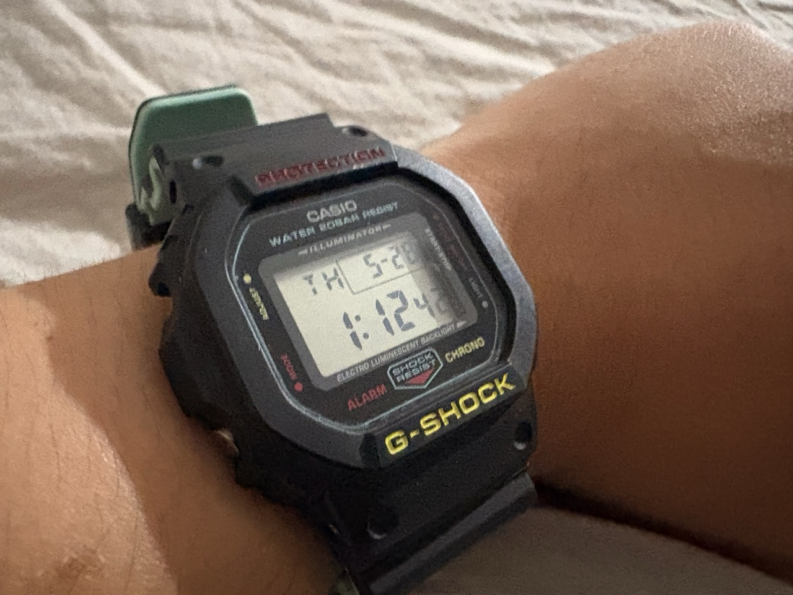

Switching back to a non-smartwatch changed the way I rely on technology.

I do not remember when in 2026 that I found my old digital watch (a G-Shock) in a bedroom drawer. At that point, I wore my Apple Watch all the time, during my sleep, or even when it's dead. However, I was struggling with finding its purpose. A little context here: this is an Apple Watch Series 7, the biggest wearable product from Apple at the time it launched, and also the first Apple Watch to have a full-on-screen QWERTY keyboard. I bought it in 2022, and its battery health is currently around 80%. I could not use this watch on a full day without enabling Low Power Mode. A dilemma here — I want to have my watch recording my sleep data and do all the notification sync and other stuff with a day-long battery. I used to think of buying a cheap used Apple Watch on eBay only for the sleep tracking feature. The moment I found my old digital watch, following the shift to single-purpose devices thanks to Spencer's Adventures, I told myself, "I gotta change the way I depend on my Apple Watch."
I am giving you a TL;DR here: I don't need a modernly fancy watch to serve the most basic things that my non-smartwatch can do without ever worrying much about the battery and distraction. And here's why.
Even digital watches have batteries, and batteries would be dead at some point. But compared to an Apple Watch, well, the comparison here seems pointless — we all know that the Apple Watch is never made to last forever, like modern smartphones. Any Apple Watch that lasts more than a day is considered "long-lasting." Using this definition, the Apple Watch Ultra series should be considered the "monsters." However, even with the magic of Low Power Mode, good optimization, and advertisement, it only lasts at most 3 days. Then the watch begs you to charge. Imagine it runs out of battery before you want to track your sleep or your fitness session, and then you end up wearing a fancy $300 bracelet with a pitch-black square charm instead of a smartwatch.
And then you wear a digital watch. It guarantees to show the time and date for you without the need to trigger. There is a button to light up the watch in dark environments. And the best perk: its battery is made to last for a decade or more! Compared to the "phenomenal" duration of 3 days on the Apple Watch, the difference is too obvious to ignore.
The Apple Watch is designed to be a companion product to the iPhone. Syncing most of the data from the iPhone, receiving notifications, and using a good health tracking device. It's a decent device to decentralize your iPhone, handy in some cases. However, here is a hot take: sometimes I feel more pressured to wear an Apple Watch. It's all about the notifications that appear every one minute. The watch goes crazy to the point that it might restart itself if things get worse. I am normally fine with notifications because I can read through them quickly and don't use Do Not Disturb. However, whenever my online friends are overly active and constantly chat, I only want to break the Apple Watch because of how annoying it vibrates.
Wearing a non-smartwatch, on the other hand, kills the annoyance of notification vibration. No OS, no notifications, just a watch that shows the time and that's it. Ok, I might need a smartphone to view all my notifications or missed phone calls, but, as I mentioned, I can quickly read through them and delete them as a whole. No more beggar moment on my wrist, just pure silence, and I love that.
I want to add one more thing: wearing a non-smartwatch surprisingly eliminates a lot of redundant steps when I prepare to go outside. I don't have to wait for my watch to fully charge, just wear it, and I'm all set. I believe it's a less distracting experience here.
After all, the best use of technology is finding out how well it helps our lives. Fancy modern technology, while sounding as "revolutionary" as other new technology trends, is only helpful if it benefits our lives in an efficient way. Talking about watches, while there are more and more quality of life features being released every year, they are fairly only new fancy paint layers on the fundamentals that have been defined for decades: knowing the time. And, personally, unless I want to track my fitness session and sleep, I don't find wearing a smartwatch like the Apple Watch necessary, because a non-smartwatch can serve the fundamental task decently, and I shouldn't worry about the battery and potential distractions.